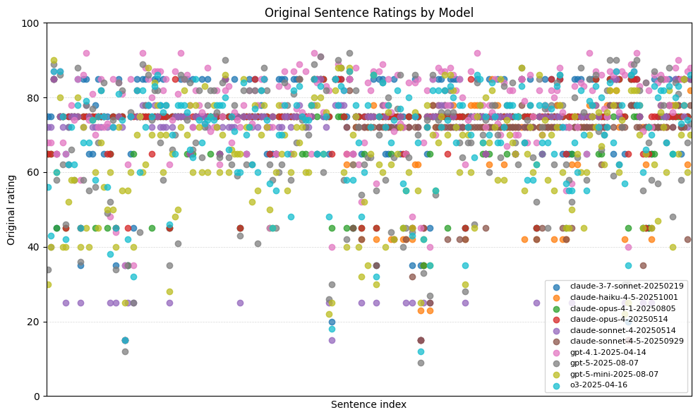
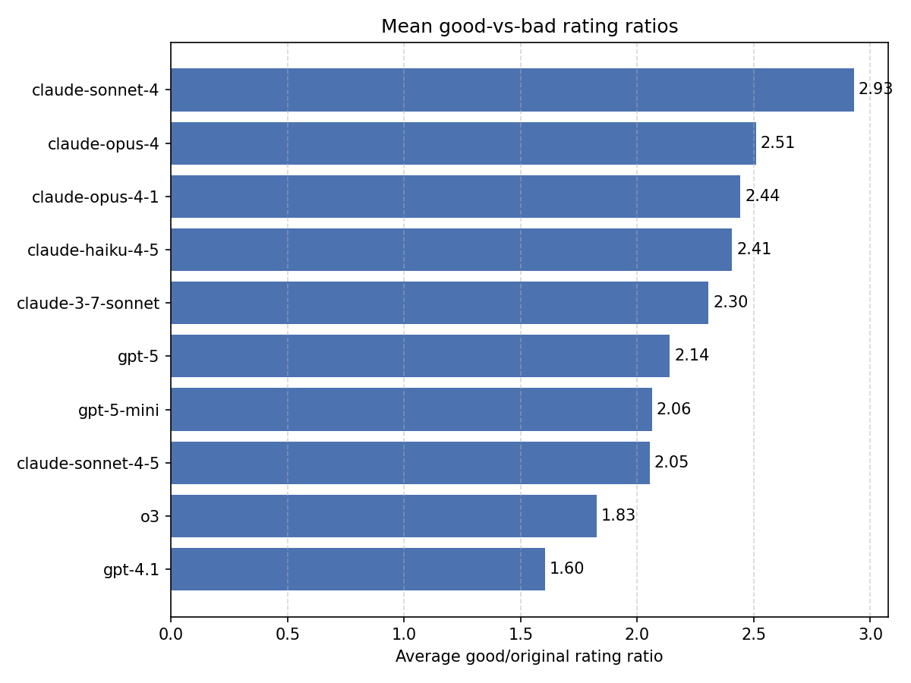
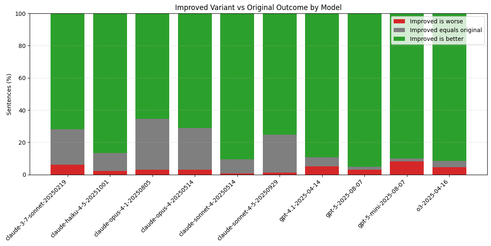

The following outlines a benchmark that hopefully measures in a very rough way if a language model is able to write "well." Basically, we are going to be asking models to write sentences, and see how much they like their own sentences. In other words, can they write well according to their own standards?
The effects of this are two-fold: firstly, we hope LLM taste currently serves as a good approximation of human taste: they basically like the same things that we do. Secondly though, I would argue that this is a "truer" measure of taste than scoring LLM writing against our own opinions. If someone else likes different things than me, but has a deeply held and internally coherent set of justifications for why they have those preferences, I wouldn't say they have bad taste, just different taste. It seems equally plausible that language models could one day have a taste in writing that is different from ours but equally good. Thus, we let them judge themselves.
The essential idea here is we ask a model to both generate and discriminate for itself. In particular, we:
If it thinks its own sentence is better, then it has some amount of internally coherent taste in the writing of this particular sentence. If it thinks its own attempted improvement has made the sentence worse, then clearly something has gone wrong.
Methods, in more detailTo start, I gathered a corpus of sentences for the models to work with. It was important to me that the sentences be "good" in some way, or at least very thoughtfully constructed, because if its trivial to write an improved version, the benchmark doesnt tell us a lot. An example of this sort of sentence that came to mind for me was writing in literary magazines, especially reviews. The sentences are highly functional (vs. poetic fiction sentences or something), but people try pretty hard and have editors that make sure the sentences are basically okay. So i took a bunch of sentences from the reviews section of The Diagram, which I happen to like. I also filtered for sentences that were more than 10 words long, so theres enough material to work with, especially given that we aren't using the context of the surrounding sentences.
Some examples:
Now, every model we are testing rates each sentence from 1-100, so we have some granularity.
As an aside, we can also clearly see that some models are uniformly much harsher or kinder with their ratings. This is totally okay, because we are only ever comparing a models rating with that same models rating of a rewritten sentence, so a model being giving twice as high scores as another in general won't affect the results.
Now, for the rewriting, I used the following prompt:
Rewrite the following sentence to be better, along whatever axis is most important. It could be more clear, more interesting, have more emotional depth, etc. Sentence: \"{sentence}\". Do not return any text other than the rewritten sentence.
I imagine this sort of task is probably pretty sensitive to prompting, and I haven't spent a lot of time trying different versions, but it felt like a simple "better" might be a bit too vague so i put in a few pointers.
Then as described, we asked the models to rate their re-written sentences via the same prompt as the original, and take the ratio of the new score to the old score, or how much better they like the rewritten sentence.
I was suprised to see sonnet 4 have the highest score here by such a large margin, especially compared to sonnet 4.5. Let's look at some of its rewrites:
| Original | Rewritten (Sonnet 4) |
|---|---|
| It is a book about the act of looking, about being looked at—and about going unnoticed. | This is a book about the hunger in our gaze, the weight of being seen, and the particular ache of invisibility. |
| Zack is in his early twenties and lives in Oklahoma City and comes from a background of wealth. | Zack's trust fund cushions him through his early twenties in Oklahoma City, where oil money runs as deep as the red dirt. |
| Instead of taking an internship at a law firm that would move him one step closer to the life prepared for him by his father, he decides on a whim to apply for a summer internship at the zoo. | He abandons the law firm internship his father had orchestrated—another rung on a ladder he never chose to climb—and impulsively applies to spend his summer mucking out animal cages at the zoo. |
Overall these do seem in fact rather nice! Potentially overwritten and a bit flowery for sure, but I'm quite fond of them. And given just once sentence, the impulse to make it flowery seems totally understandable.
Lets look at what 4.5 is doing to compare:
| Original | Rewritten (Sonnet 4.5) |
|---|---|
| It is a book about the act of looking, about being looked at—and about going unnoticed. | It is a book about seeing and being seen—and about the particular ache of invisibility. |
| Zack is in his early twenties and lives in Oklahoma City and comes from a background of wealth. | Zack, a young man in his early twenties, grew up cushioned by family money in Oklahoma City. |
| Instead of taking an internship at a law firm that would move him one step closer to the life prepared for him by his father, he decides on a whim to apply for a summer internship at the zoo. | He rejects the law firm internship his father had mapped out for him and applies to the zoo instead, trading a predetermined future for one summer of his own choosing. |
(It's funny that they both come up with the same "particular ache of invisibility" phrase!)
Another straightforward way of looking at these results would be to ask: "What percent of the time did does the model try to rewrite the sentence to be better but actually makes it worse according to its own standards?
It's also cool that based on this graph it seems like the largest problem with this benchmark is that its just too easy: almost all the models tested can very consistently write a sentence that they like better than a basically quite good human sentence.
Another detail fo this graph: openai models are way better at giving a more varied scores to sentences, so consequently They have way less instances of "thinks both sentences are exactly the same quality" than the anthropic models.
I certainly wouldn't go so far as to say that this is actually measuring taste. In the limit, a model that just absoltuely loves the sound of its own voice and hates everything else would get a perfect score on this benchmark, but clearly wouldn't have good taste. In general though while this sort of self-preference could certainly be a factor, it feels like theres at least some real information to be gained from the differences here.
I'm also somewhat partial to the idea of "llms can write better when the have something to say." For these contextless sentences they don't really have any attachment to the meaning of the sentence, so aren't going to perform as well as for a more goal-directed sentence. I'm sure theres a version of this that could lean into this idea more.
Awful vibe-coded source code is available here.